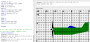

graphicsutilitiesstampmaker
Stampmaker
Generates coordenates for stamp and poly instructions
Description
It isn't easy to draw by inserting coordenates {x1,y1,x2,y2……xn,yn} . This program allows to draw, as the coordenates are generated in the test window. It is also possible to draw multiple shapes by copying from the text output window to the edit window on the previousshapes: routine.
# Draw a shape then copy then copy the array to your program and use it as a stamp or a poly. The shape is completed when you return to the initial point (Red)
# Draw a shape then copy the array and use it for Stamps
graphsize 800,500
fastgraphics
penwidth (2)
print "Shape={";
oldx=0
oldy=0
n=2
dim shape(2)
init= true
fin = false
clickclear
font "arial",15,100
loop:
gosub previousshapes
gosub drawgraph
circle mousex,mousey,3
color red
circle shape[0],shape[1],4
color black
x=floor(clickx/20-19.5)
y=floor(-clicky/20+12.5)
if n>3 and shape[n-2]=shape[0] and shape[n-1]=shape[1]then fin=true
# Checks for new click
if oldx<>clickx or oldy<>clicky then
if init = true then print x+","+(-y);
if init = false then
print ","+x+","+(-y);
n=n+2
end if
init= false
redim shape(n)
shape[n-2]= floor(clickx/20+.5)*20
shape[n-1]= floor(clicky/20+.5)*20
end if
oldx=clickx
oldy=clicky
if n > 3 then call draw (ref(shape),n,fin)
refresh
clg
goto loop
subroutine draw(ref(shape),n,fin)
color black
for p = 4 to n step 2
line shape[p-4],shape[p-3],shape[p-2],shape[p-1]
next p
if fin = true then
refresh
Print "}"
stamp 0,0,shape
refresh
print "Copy paste and run"
end
end if
end subroutine
drawgraph:
color black
for y= 0 to 480 step 20
for x= 0 to 800 step 20
circle x,y,2
if x/100=int(x/100) then
line x,0,x,480
text x,0,x/20-20
end if
if y/100=int(y/100) then
line 0,y+40,800,y+40
text 0,y+40,y/20-10
end if
next x
next y
line 0,240,800,240
line 400,0,400,480
return
# You can copy the shapes to here to do multiple shape compositions
previousshapes:
shapea={0,0,0,0,0,0}
shapeb={0,0,0,0,0,0}
shapec={0,0,0,0,0,0}
shaped={0,0,0,0,0,0}
color red
stamp 400,240,20,shapea
color green
stamp 400,240,20,shapeb
color yellow
stamp 400,240,20,shapec
color purple
stamp 400,240,20,shaped
return
Example

{kind=link}
graphicsutilitiesstampmaker.txt · Last modified: 2013/04/03 14:02 by m_santos